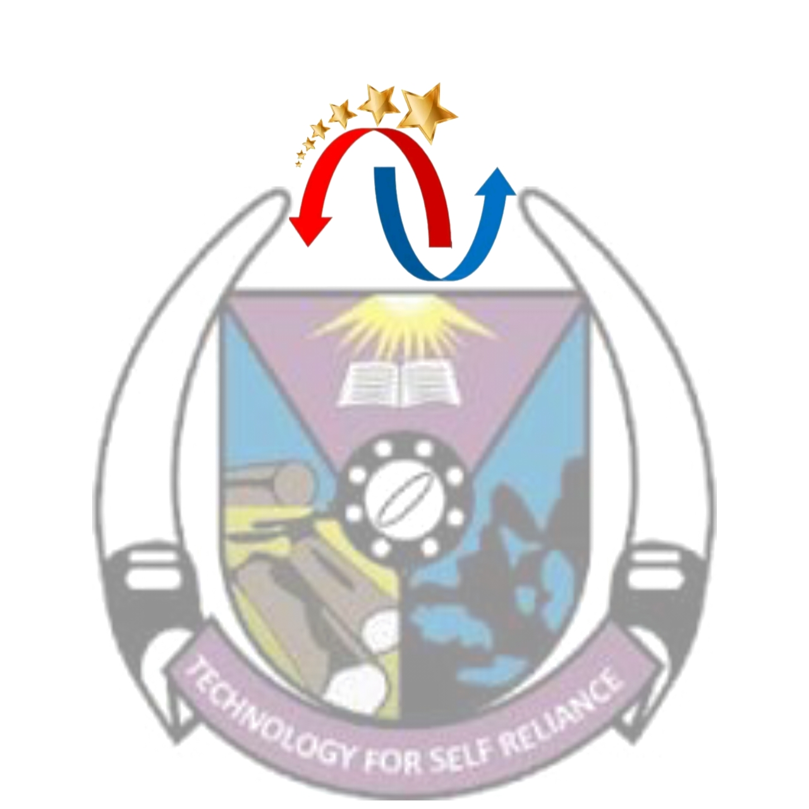

IE SummarySDLC Models | Prototyping | Pseudocode | C Programming
Waterfall, Agile, Spiral, V-Model, Iterative, Incremental, RAD, Prototyping
Spiral: best for high-risk, complex systems
Helps clarify requirements, reduces misunderstandings, allows early user feedback
Top-down design: break system into main modules
ATM: authenticate → menu → transactions → exit
Arrays, 2D arrays, loops for processing student scores, averages, min/max